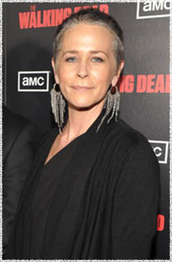

Мелисса МакБрайд
 Кэрол (актриса Мелисса МакБрайд) - член группы выживших.
Мелисса МакБрайд (Melissa McBride) - американская актриса, родилась 23 мая 1965 года в США в городе Лексингтон.
Хотя актёрская карьера Мелиссы Макбрайд началась двадцать лет назад, она провела последние десять лет, работая в первую очередь за камерой в качестве коммерческого директора по кастингу в её родном городе Атланта, штат Джорджия.
До прихода к актёрскому составу Ходячих мертвецов, Мелисса была, пожалуй, наиболее известна своей короткой, но убедительной сценой 'женщины с детьми в доме' в фильме Мгла (The Mist). Её ранняя фильмография включает: Опасные игры (The Dangerous Lives of Altar Boys). На телевидении МакБрайд появлялась в сериале Бухта Доусона (Dawson's Creek), Крутой Уокер (Walker Texas Ranger), Профайлер (Profiler) и American Gothic, а также многочисленных рекламных роликах и телевизионных фильмах Живое доказательство (Living Proof) и Пираты Силиконовой долины (Pirates of Silicon Valley).
В дополнение к операторской работе, Мелисса также занимается озвучкой. Она была голосовым дублёром для Энн Бэнкрофт в анимационном мультфильме 2008 года Delgo. Макбрайд заявила, что имитировать голос великой актрисы, которая одобрила её работу, было честью и несомненно её самой стимулирующей ролью на сегодняшний день.
Известна зрителям по фильмам и сериалам:
Мгла (The Mist)
Пираты Силиконовой Долины (Pirates of Silicon Valley)
Бухта Доусона (Dawson's Creek)
Крутой Уокер (Walker Texas Ranger)